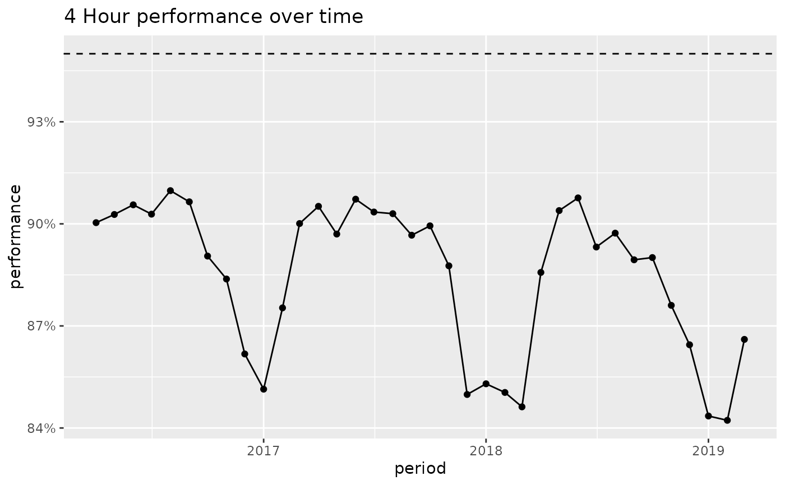
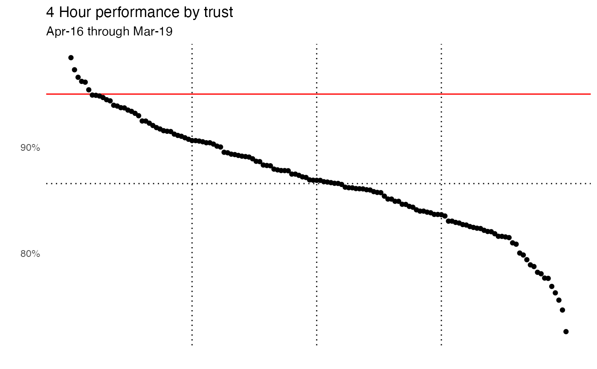

R/ae_attendances.R
ae_attendances.RdReported attendances, 4 hour breaches and admissions for all A&E departments in England for the years 2016/17 through 2018/19 (Apr-Mar). The data has been tidied to be easily usable within the tidyverse of packages.
data(ae_attendances)
Tibble with six columns
The month that this data relates to
The ODS code for this provider
The department type. either 1, 2 or other
the number of patients who attended this department in this month
the number of patients who breaches the 4 hour target in this month
the number of patients admitted from A&E to the hospital in this month
NHS England Statistical Work Areas
Data sourced from NHS England Statistical Work Areas which is available under the Open Government Licence v3.0
#> #>#> #> #>#> #> #>library(ggplot2) library(scales) # Create a plot of the performance for England over time ae_attendances %>% group_by(period) %>% summarise_at(vars(attendances, breaches), sum) %>% mutate(performance = 1 - breaches / attendances) %>% ggplot(aes(period, performance)) + geom_hline(yintercept = 0.95, linetype = "dashed") + geom_line() + geom_point() + scale_y_continuous(labels = percent) + labs(title = "4 Hour performance over time")# Now produce a plot showing the performance of each trust ae_attendances %>% group_by(org_code) %>% # select organisations that have a type 1 department filter(any(type == "1")) %>% summarise_at(vars(attendances, breaches), sum) %>% arrange(desc(attendances)) %>% mutate(performance = 1 - breaches / attendances, overall_performance = 1 - sum(breaches) / sum(attendances), rank = rank(-performance, ties.method = "first") / n()) %>% ggplot(aes(rank, performance)) + geom_vline(xintercept = c(0.25, 0.5, 0.75), linetype = "dotted") + geom_hline(yintercept = 0.95, colour = "red") + geom_hline(aes(yintercept = overall_performance), linetype = "dotted") + geom_point() + scale_y_continuous(labels = percent) + theme_minimal() + theme(panel.grid = element_blank(), axis.text.x = element_blank()) + labs(title = "4 Hour performance by trust", subtitle = "Apr-16 through Mar-19", x = "", y = "")